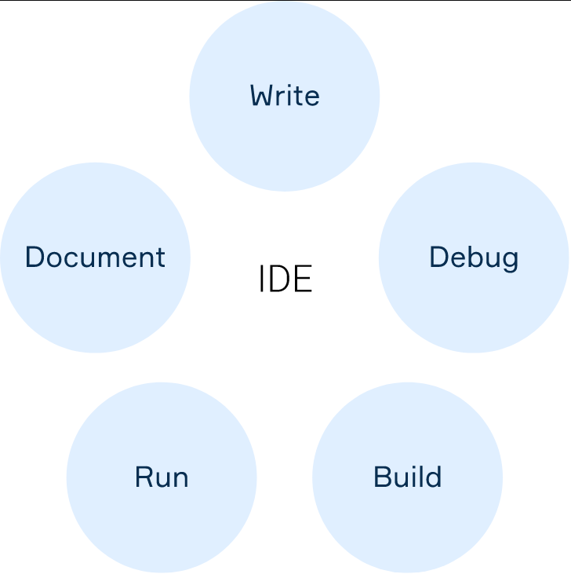

Writing just one program involves a whole variety of tasks: you write the code, find and fix errors that inevitably arise, then the code has to be compiled, run, and documented. And guess what, all of this has to be done over and over again (well, that's just great). With small programs like Hello World, you can perform these tasks using a simple text editor to write your source code and a set of tools to translate and start the programs. Some text editors can even highlight the syntax, which simplifies the writing process, but this may not suffice for working on something larger and more complex.
As a professional developer, you need a specialized tool to navigate through your multiple-file programs, modify, compile, run and debug them, display syntax errors, and so on. An Integrated Development Environment (IDE) is precisely that: it offers a single program in which developers can deal with all these common tasks.
Most modern IDEs are graphical, though the first ones were used back in the era when no one dreamed of graphics. They were built on a text-based interface and could only be operated using function keys and hotkeys to invoke various functions. This was, for example, Turbo Pascal, created by Borland:

The first IDEs were designed to be operated via a console or terminal, which were new in themselves. Indeed, before that, programs were generally created on paper and entered into the machine using pre-prepared paper media such as punched cards or punched tapes.
Here are some specific historical examples. Dartmouth BASIC was the first language designed to run in a console or terminal. This ancient IDE was controlled by commands, not even using menus and hotkeys. However, it did allow you to edit source code, manage files, compile, debug, and run programs in a manner fundamentally similar to modern IDEs.
Then it was time for Maestro I. It was a product from Softlab Munich that was the world's first integrated development environment for software. Can you believe it held a leading position in its niche for almost twenty years? Today, though, Maestro I belong to history.
As you see, humanity did not immediately come to multifunctional IDEs.
IDEs were created to maximize programmer productivity through tightly coupled components with simple user interfaces. This allows the developer to do fewer steps to switch between different modes, as opposed to discrete development programs. However, modern graphical IDEs are complex software packages. That means one can achieve the necessary acceleration of the work process only after training. Anyway, there are no big difficulties here either: many IDEs are quite interactive, and the interfaces of different manufacturers are often very similar, so it is not too hard to switch from one IDE to another.
There are a lot of IDEs for different programming languages. Some support only a single language, while others support multiple or can be extended with plugins. For instance, IDEs that support multiple languages are IntelliJ IDEA, Eclipse, NetBeans, Android Studio, Visual Studio Code. IDEs for one specific programming language are Delphi, Dev-C++, IDLE for Python, PyCharm.
As an example, this is what the IntelliJ IDEA IDE looks like:
All of these environments can be run on Windows, macOS, or GNU/Linux.
In general, the development environment includes:
A text editor, which is designed to work with text files interactively. It allows you to view the contents of text files and perform various actions like inserting, deleting, and copying text, contextual search, replacement, sorting strings, viewing character codes and converting encodings, printing. They often contain additional functionality, such as syntax highlighting.
Atranslator (compiler and/or interpreter) , which translates a text written in a programming language into machine code and does this either immediately before starting the program (compilation) or line by line (interpretation).
Build automation tools, which get the code ready and put everything together.
A Debugger, which looks for errors in the code and immediately reports them.
Using an IDE makes you a more productive developer because an IDE provides tight-knit components with a similar user interface. It also automates some routine tasks and even gives you advice and feedback. That's all because the purpose of the integrated environment is to combine various utilities into one product. This approach allows developers to focus on solving their core problems, while common and standard operations are taken care of by an IDE.